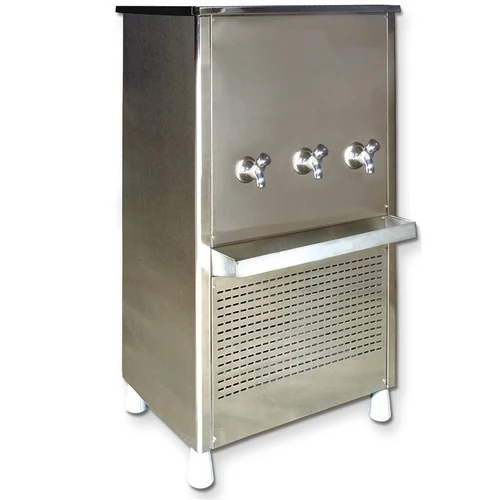

INFRASTRUCTURE

Transport
Our School Transport System is conscientiously maintained under the guidelines of the school management with experienced

CLEAN DRINKING WATER COOLERS
CLEAN DRINKING WATER COOLERS
Our school promotes a healthy lifestyle to ensure minimizing the risk of spreading microbes which schools are typically prone to due to the close contact of people for prolonged periods, numerous commonly touched communal surfaces, a clean drinking Water Cooler is an essential tool.
GAMES AND SPORTS
St Mary’s is truly fortunate to be cradled in lush greenery. It has a flat well set playground of more than 6000 students